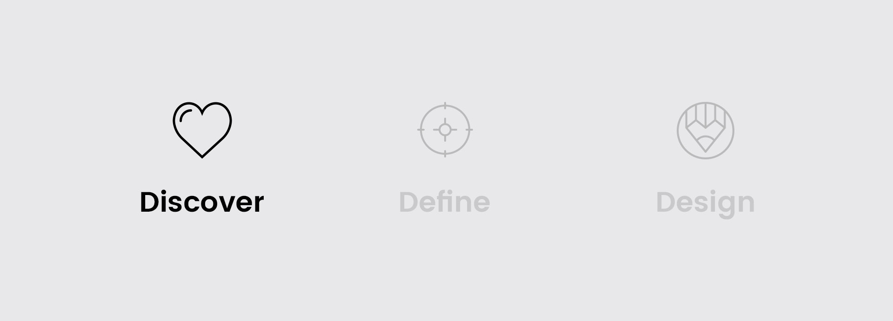
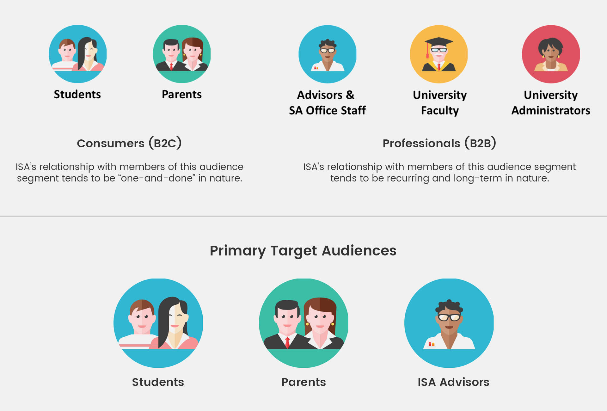
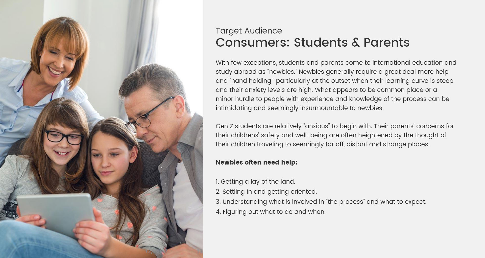
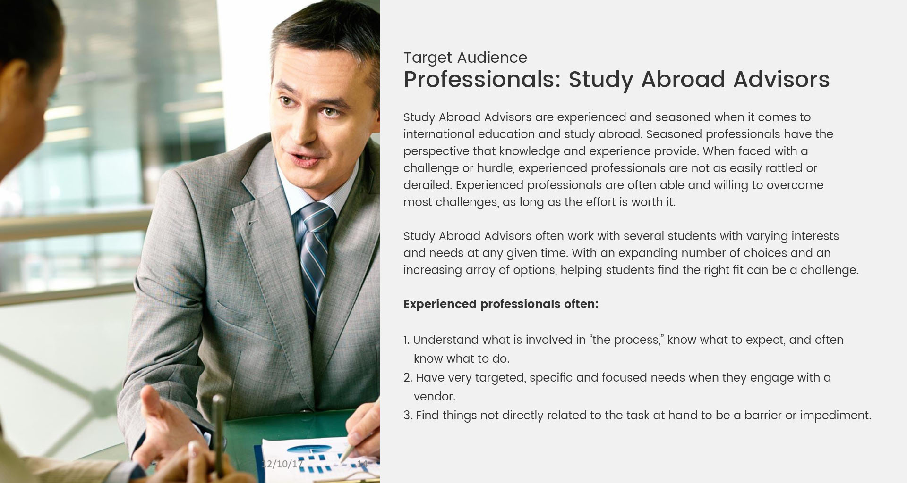
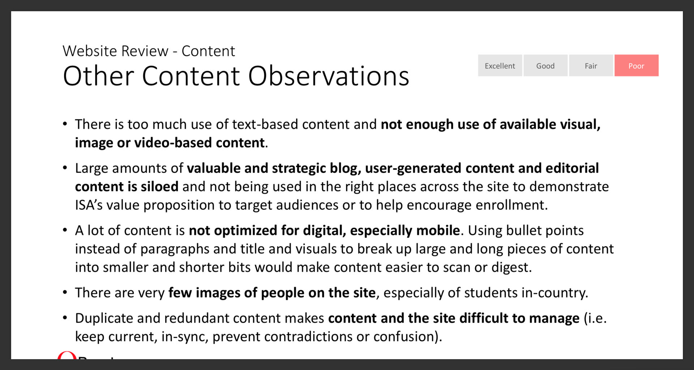
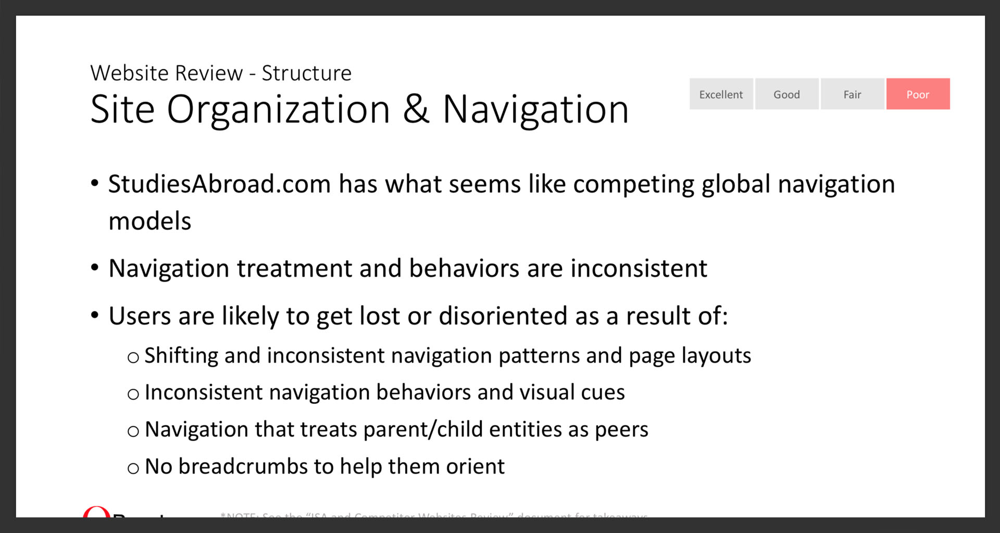
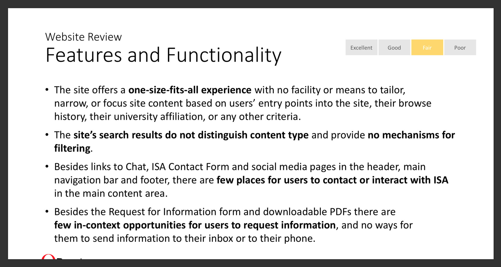
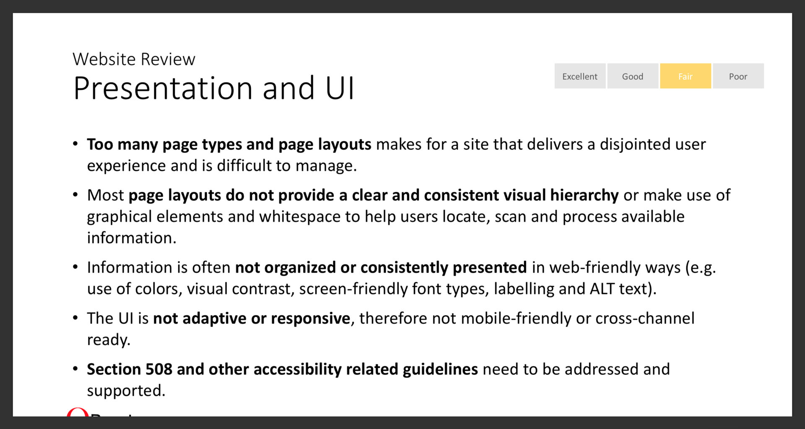
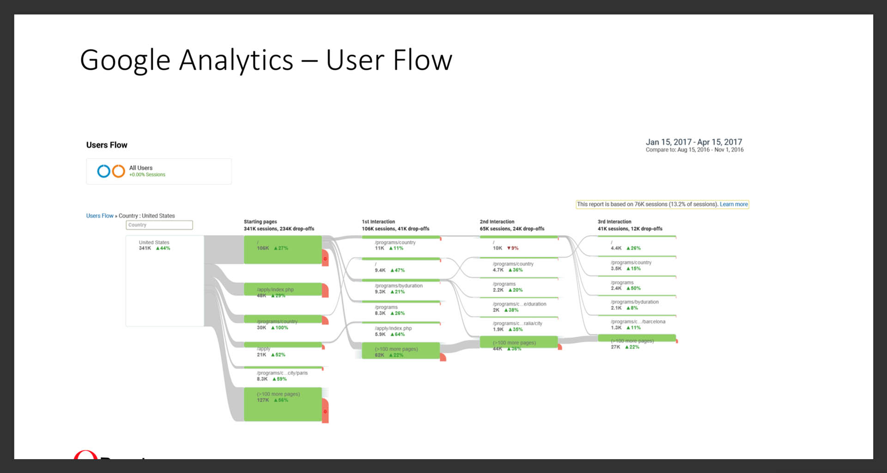
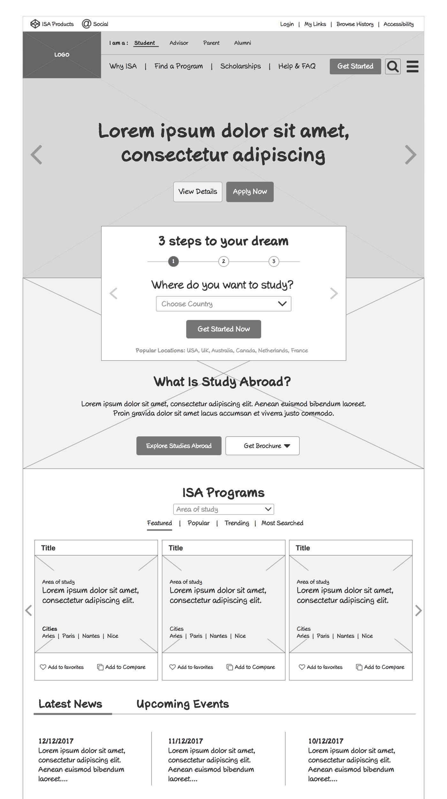

Statement of Originality & Confidentiality
To comply with my non-disclosure agreement, I have omitted and obscured confidential information in this case study. All the below information belongs to the organization whose name appears on the document and is to be treated as confidential. It is used to demonstrate my work experience and related skills. Permission has been granted for the product to be used as documentation of my work. Please do not disclose any information to any person or persons who would use it for the purpose outside the possibility of employment.
OVERVIEW
ISA is a leading educational consultancy that facilitates quality services in the area of international education. Spread across the continents of Asia, Africa, Europe, Latin America and the Pacific, ISA partners with accredited schools and universities to ensure their customer needs. QBurst was approached to do a UX discovery phase and provide recommendations for redesigning the existing ISA website.
Objectives
• A website that delivers a more appealing, effective, user-friendly, and personalized experience for target audiences across all targeted devices and channels to improve both user and business performance.
• A new content management system for non-technical business users to manage content and publish to the site.
• A site that is easier to administer and maintain.
Goals
• Perform a situation assessment of the current, or “As-Is,” state of things to define the nature and scope of the challenges to be addressed.
• Establish a shared understanding and consensus within ISA and World Strides about priorities, goals and desired outcomes for the project.
• Create a vision for the desired future, or “To-Be,” state that provides inputs and direction for the Design and Development teams to deliver solutions for the challenges identified during Discovery.
• Provide recommendations for proposed solutions and platforms that deliver on ISA’s vision for more appealing, effective, user-friendly and personalized offerings to all target audiences across targeted devices and channels.
MY ROLE
I collaborated with the Qburst UX team in US for the discovery phase which extended for two months.

Discover
Target Audience
We interviewed a number of stakeholders and few students to know Who they were, their goals, needs, challenges, and their behaviors.
Understand ISA Business & Competitors
I did a competitors' analysis to better understand ISA’s business, operations, goals, risks and challenges, education industry.
Heuristic evaluation
An analysis of the current site was also done to get a better understand of the current flow, strengths and weakness of UI.
Key Takeaways
• Key challenges facing the business include: Changing preferences, expectations and behaviors across all target audience segments.
• Outdated proprietary technology and IT resourcing.
• A “redesign” will address the presentation-related issues on the website, however, the greatest challenges are related to content and structure.

Target audience segments findings

Target audience findings

Target audience findings

Existing site review findings

Existing site review findings

Existing site review findings

Existing site review findings

Existing site review findings
STAKEHOLDER INTERVIEW
Stakeholder interview was done to better understand their vision, concerns and needs.
Proposed UI Wireframe

REFLECTION AND NEXT STEP
For a better transition to the design phase, few more tasks had to be completed that includes Card Sorting, defining User Flows and Usability Testing. These suggestion were not met due to budget and time constraints.